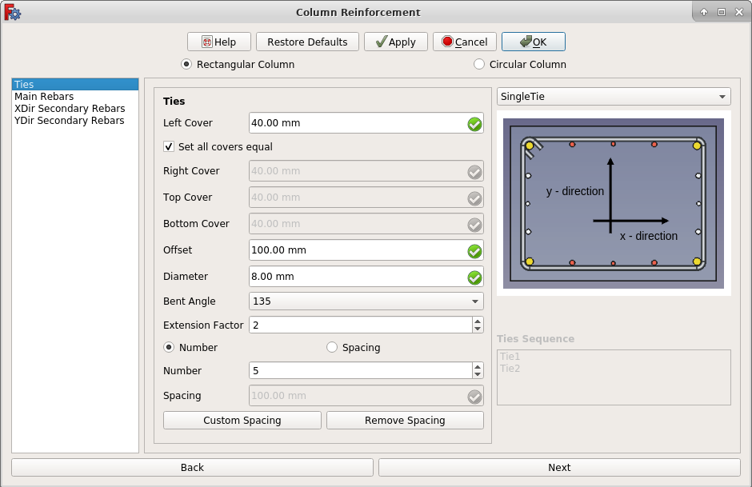
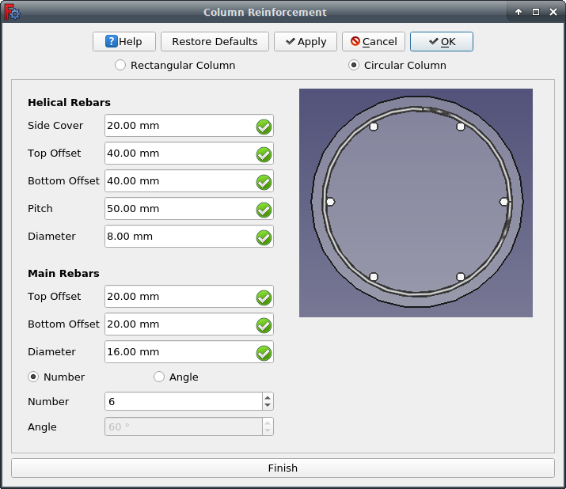

Reinforcement ColumnRebars Circular/fr
|
|
| Emplacement du menu |
|---|
| 3D/BIM → Outils pour les armatures → Armature pour colonne |
| Ateliers |
| BIM, Reinforcement |
| Raccourci par défaut |
| Aucun |
| Introduit dans la version |
| 0.19 |
| Voir aussi |
| Reinforcement Armature en colonne, Reinforcement Armature 2 cadres 6 barres |
Description
L'outil Armature pour colonne permet à l'utilisateur de créer des armatures à l'intérieur d'un objet colonne de Arch Structure. Cette page présente un exemple d'utilisation supplémentaire de l'outil.
Cet outil fait partie de l'atelier Reinforcement, un atelier externe qui peut être installé avec le  gestionnaire des extensions.
gestionnaire des extensions.
Trois exemples d'utilisation sont disponibles :
- Colonne rectangulaire à une seul cadre
- Armature 2 cadres 6 barres
- Colonne circulaire (voir ci-dessous)

Armature circulaire à l'intérieur d'une colonne
Utilisation
1. Sélectionnez la face supérieur de l'objet  Arch Structure précédemment crée.
Arch Structure précédemment crée.
2. Sélectionnez ensuite  Armature pour colonne de la barre d'outils des armatures.
Armature pour colonne de la barre d'outils des armatures.
3. Une boîte de dialogue apparaîtra à l'écran, comme indiqué ci-dessous.

Boîte de dialogue pour l'outil Armature en colonne de Arch
{kind=link}
4. Sélectionnez Circular Column dans la boîte de dialogue Column Reinforcement.

Boîte de dialogue pour armature circulaire de colonne
{kind=link}
5. Entrez les données relatives aux armatures des colonnes circulaires.
12. Cliquez sur OK ou Appliquer pour générer un armature circulaire de colonne.
7. Cliquez sur Annuler pour quitter la fenêtre de dialogue.
Propriétés
Helical Rebars: barres hélicoïdales
- DonnéesSideCover : distance entre l'armature et la face incurvée.
- DonnéesTop Cover : distance entre l'armature et la face supérieure de la structure.
- DonnéesBottom Cover : distance entre l'armature et la face inférieure de la structure.
- DonnéesPitch : pas d'une hélice est la hauteur d'un tour d'hélice complet, mesuré parallèlement à l'axe de l'hélice.
- DonnéesDiameter : diamètre de l'armature.
Main Rebars: armature principale
- DonnéesTop Offset : distance entre les armatures à partir de la face supérieure de la structure.
- DonnéesBottom Offset : distance entre les armatures à partir de la face inférieure de la structure.
- DonnéesDiameter : diamètre des armatures principales.
- DonnéesNumber : le nombre d'armatures principales.
- DonnéesAngle : la distance angulaire entre les étriers.
Script
Voir aussi : Arch API, Reinforcement API et FreeCAD Débuter avec les scripts.
L’outil Armature circulaire peut être utilisé dans une macros et dans la console Python en utilisant la fonction suivante :
Créer une armature circulaire de colonne
RebarGroup = CircularColumn.makeReinforcement(
s_cover,
helical_rebar_t_offset,
helical_rebar_b_offset,
pitch,
dia_of_helical_rebar,
main_rebars_t_offset,
main_rebars_b_offset,
dia_of_main_rebars,
number_angle_check,
number_angle_value,
structure=None,
facename=None,
)
- Crée un objet
RebarGroupà partir de lastructuredonnée qui est une Arch Structure et defacenamequi est une face de cette structure.- Si aucune
structurenifacenamen'est donné, la face sélectionnée par l'utilisateur sera entrée.
- Si aucune
s_cover,helical_rebar_t_offsetethelical_rebar_b_offsetsont des distances internes de décalage pour l'armature hélicoïdale par rapport aux faces de la structure. Ce sont respectivement les décalages latéraux, supérieurs et inférieurs.pitchest le paramètre qui détermine la proximité ou l'éloignement de chaque boucle hélicoïdale.dia_of_helical_rebarest le diamètre de l'armature hélicoïdale à l'intérieur de la structure.main_rebars_t_offsetetmain_rebars_b_offsetsont des distances de décalage internes pour les armatures principales par rapport aux faces supérieure et inférieure de la structure, respectivement.dia_of_main_rebarsest le diamètre des armatures principales.number_angle_checks'il estTrue, cela créera autant d'armatures principales que celles données parnumber_angle_value. Si c'estFalse, cela créera des armatures principales avec un angle denumber_spacing_value, exprimé en degrés.number_angle_valuespécifie le nombre d'armatures principales, ou la valeur de l'angle entre les armatures principales, selonnumber_angle_check.
Exemple
import FreeCAD, Draft, Arch
from ColumnReinforcement import CircularColumn
Circle = Draft.makeCircle(radius=250)
Structure = Arch.makeStructure(Circle)
Structure.ViewObject.Transparency = 80
FreeCAD.ActiveDocument.recompute()
RebarGroup = CircularColumn.makeReinforcement(
s_cover=20,
helical_rebar_t_offset=40,
helical_rebar_b_offset=40,
pitch=50,
dia_of_helical_rebar=8,
main_rebars_t_offset=20,
main_rebars_b_offset=20,
dia_of_main_rebars=16,
number_angle_check=True,
number_angle_value=6,
structure=Structure,
facename="Face3",
).rebar_group
Éditer une armature circulaire de colonne
Vous pouvez modifier les propriétés des armatures hélicoïdales et des armatures principales à l’aide de la fonction suivante :
rebar_group = editReinforcement(
rebar_group,
s_cover,
helical_rebar_t_offset,
helical_rebar_b_offset,
pitch,
dia_of_helical_rebar,
main_rebars_t_offset,
main_rebars_b_offset,
dia_of_main_rebars,
number_angle_check,
number_angle_value,
structure=None,
facename=None,
)
rebar_groupest un objet de groupeColumnReinforcementcréé précédemment.- Les autres paramètres sont les mêmes que ceux requis par la fonction
makeSingleTieFourRebars(). structureetfacenamepeuvent être omis afin que l'armature reste dans la structure d'origine.
Exemple
from ColumnReinforcement import CircularColumn
rebar_group = CircularColumn.editReinforcement(
rebar_group,
s_cover=30,
helical_rebar_t_offset=30,
helical_rebar_b_offset=30,
pitch=60,
dia_of_helical_rebar=10,
main_rebars_t_offset=-30,
main_rebars_b_offset=-30,
dia_of_main_rebars=18,
number_angle_check=False,
number_angle_value=45,
structure=Structure,
facename="Face3",
)
- Ébauche 2D : Esquisse, Ligne, Polyligne, Cercle, Arc, Arc par 3 points, Congé, Ellipse, Polygone, Rectangle, B-Spline, Courbe de Bézier, Courbe de Bézier cubique, Point
- 3D/BIM : Projet, Site, Bâtiment, Niveau, Espace, Mur, Mur-rideau, Colonne, Poutre, Dall, Porte, Fenêtre, Conduite, Raccord, Escaliers, Toit, Panneau, Ossature, Clôture, Treillis, Equipment
- Outils de renforcement : Armature personnalisée, Armature droite, Armature en U, Armature en L, Armature en étrier, Armature cintrée, Armature hélicoïdale, Armature pour colonne, Armature pour poutre, Armature de dalle, Armature de semelle
- Outils 3D génériques : Profilé, Boîte, Générateur de formes, Surface liée, Bibliothèque d'objets, Composant, Référence externe
- Annotation : Texte, Forme à partir d'un texte, Dimension alignée, Dimension horizontale, Dimension verticale, Ligne de référence, Étiquette, hachure, Axes, Système d'axes, Grille, Plan de coupe, Feuille TechDraw, Nouvelle vue
- Créer des vues 2D : Dessin 2D, Projection 2D, Coupe 2D
- Aimantation : Verrouiller l'aimantation, Aimantation Extrémité, Aimantation Milieu, Aimantation Centre, Aimantation Angle, Aimantation Intersection, Aimantation Perpendiculaire, Aimantation Extension, Aimantation Parallèle, Aimantation Spécial, Aimantation Au plus proche, Aimantation Orthogonal, Aimantation Grille, Aimantation Au plan de travail, Aimantation Dimensions, Basculer la grille, Plan de travail de devant, Plan de travail en haut, Plan de travail de côté, Plan de travail
- Modifier : Déplacer, Copier, Pivoter, Cloner, Copie simple, Créer un composé, Décalé, Décalé en 2D, Ajuster, Joindre, Scinder, Échelle, Étirer, Draft vers Esquisse, Agréger, Désagréger, Ajouter un composant, Supprimer un composant, Réseau orthogonal, Réseau selon une courbe, Réseau polaire, Réseau de points, Couper selon un plan coupe, Miroir, Extrusion, Soustraction, Union, Intersection
- Gérer : Configurer les BIM, Les vues BIM, Configurer un projet, Fenêtres & portes, Éléments IFC, Quantités IFC, Propriétés IFC, Classification, Calques, Matériaux, Nomenclature, Contrôle en amont, Éditer style d'annotation
- Utilitaires : Bascule des panneaux inférieurs, Corbeille, Vue du plan de travail, Sélection groupée, Définir la Pente, Proxy de plan de travail, Ajouter au groupe de construction, Diviser un maillage, Maillage vers forme, Sélection de maillages non-manifold, Supprimer la forme, Boucher des trous, Fusionner des murs, Vérification, Basculer en B-rep IFC, Bascule des sous composants, Prendre des cotes, Comparateur d'IFC, Explorateur d'IFC, Tableur IFC, Image Plane, Unclone, Rewire, Glue, Re-Extrude
- Outils des panneaux : Panneau, Découpe de panneau, Feuille de panneaux, Calepinage
- Outils des structures : Structure, Structural System, Multiple Structures
- Outils IFC : IFC Diff, IFC Expand, Create IFC Project, IfcOpenShell Update
- Nudge: Nudge Switch, Nudge Up, Nudge Down, Nudge Left, Nudge Right, Nudge Rotate Left, Nudge Rotate Right, Nudge Extend, Nudge Shrink
- Additionnel : Préférences, Réglage fin, Importer/Exporter, IFC, DAE, OBJ, JSON, 3DS, SHP
- Démarrer avec FreeCAD
- Installation : Téléchargements, Windows, Linux, Mac, Logiciels supplémentaires, Docker, AppImage, Ubuntu Snap
- Bases : À propos de FreeCAD, Interface, Navigation par la souris, Méthodes de sélection, Objet name, Préférences, Ateliers, Structure du document, Propriétés, Contribuer à FreeCAD, Faire un don
- Aide : Tutoriels, Tutoriels vidéo
- Ateliers : Std Base, Assembly, BIM, CAM, Draft, FEM, Inspection, Material, Mesh, OpenSCAD, Part, PartDesign, Points, Reverse Engineering, Robot, Sketcher, Spreadsheet, Surface, TechDraw, Test